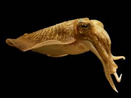
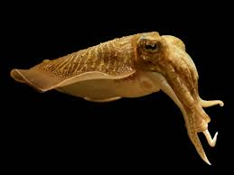

Los Cefalópodos, Cephalopoda, son una clase dentro de los moluscos caracterizados por ser exclusivamente marinos, presentar una cabeza prominente y una serie de tentáculos derivados de la estructura conocida como pie en los demás moluscos. La proximidad entre la cabeza y los tentáculos les otorga el nombre derivado del griego. En este grupo encontramos algunos animales ampliamente conocidos como los pulpos, los calamares o las sepias.
 
